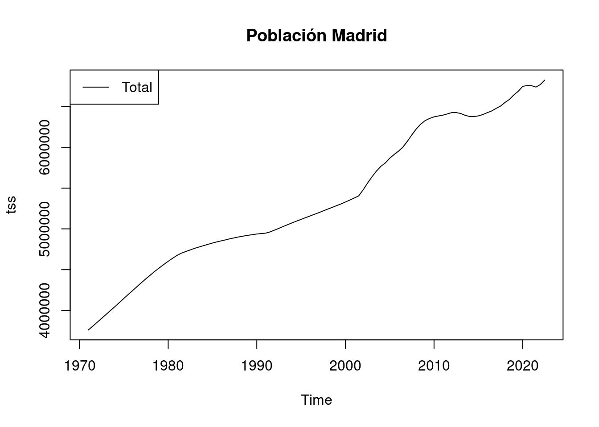
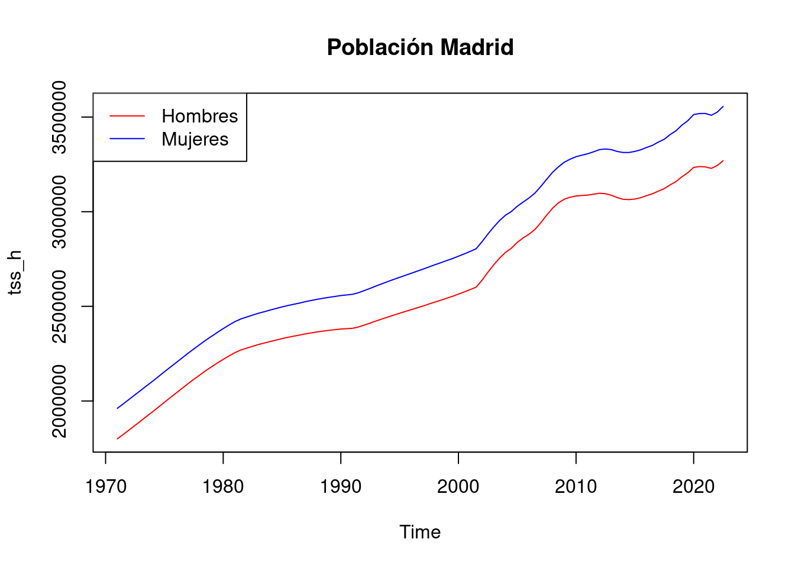
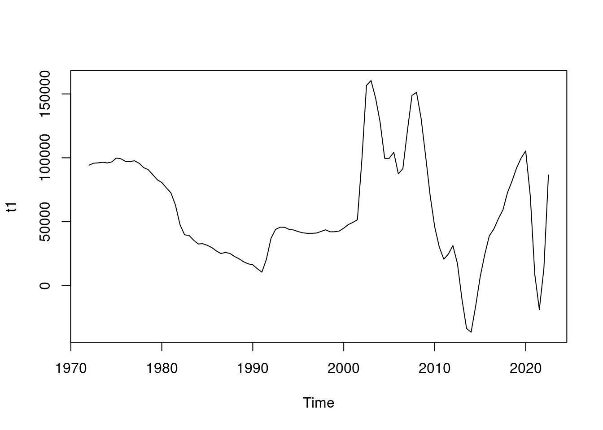
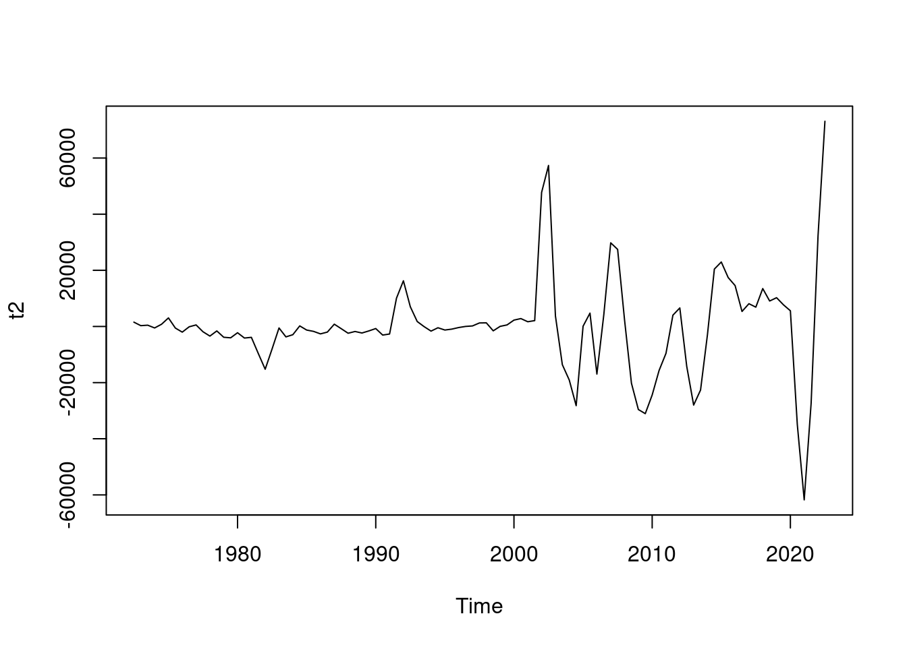
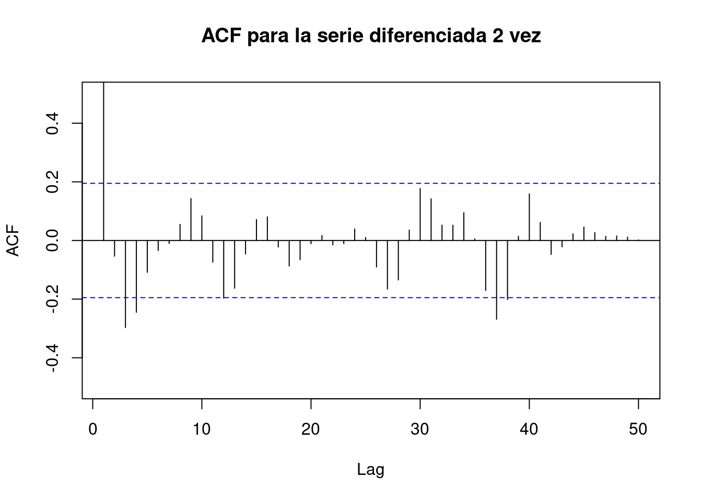
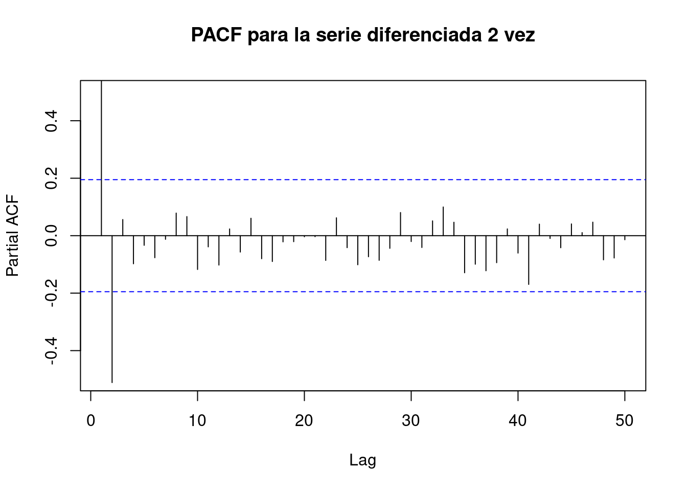
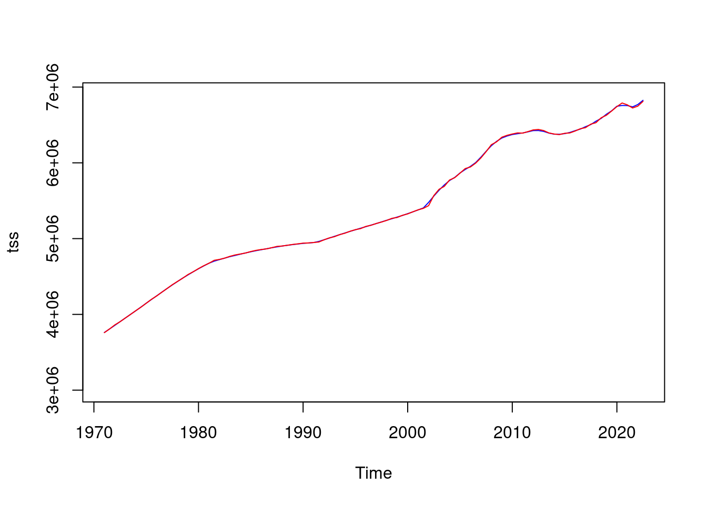

# Librerías
library(forecast) # para predecir observaciones futuras. acf() y pacf()
library(ggplot2) # Nice plots
library(readxl) # Para leer excels
library(stats) # Para crear objetos ts()
library(tseries) # Para verificar estacionaridad de una serie | función adf.test()
library(purrr) # para mapSeries Temporales - ARIMA: madrid_series
Introducción
A continuación se va a explicar como modelizar una serie temporal con un ARIMA y todas las consideraciones que se deben tener en cuenta. Se llevará a cabo un ejemplo práctico a partir de un conjunto de datos, mostrando como interpretar los resultados que se van obteniendo.
dataset
En este cuaderno vamos a analizar el dataset llamado Madrid.xlsx. Este dataset presenta los datos de población de la Comunidad Autónoma de Madrid a 1 de Enero y 1 de Julio de cada año desde 1971. La serie temporal se encuentra desagregada por Sexos, mostrando para Hombres, Mujeres y el total de la población. El objetivo de este estudio es intentar modelar dichas series mediante un modelo ARIMA.
Concretamente en este dataset tenemos las siguientes variables:
- ccaa: Madrid siempre.
- sexo: Hombres, Mujeres, Total.
- fecha: Fecha correspondiente.
- población: Cifras de población.
Descripción del trabajo a realizar
Se pretende ajustar una serie temporal que contiene la población de Madrid mediante un modelo ARIMA.
- Explorar patrones en la serie temporal.
- Ver que la serie sea estacionaria.
- Aplicar diferenciación si es necesario para estacionarizar la serie.
- Identificar modelos ARIMA/SARIMA utilizando información de la exploración y funciones ACF y PACF.
- Ajustar varios modelos ARIMA/SARIMA y seleccionar el mejor según métricas de ajuste.
- Evaluar la significancia estadística de los coeficientes del modelo ARIMA.
- Interpretar los coeficientes para comprender su influencia en la serie temporal.
Análisis Exploratorio (EDA)
EDA viene del Inglés Exploratory Data Analysis y son los pasos relativos en los que se exploran las variables para tener una idea de que forma toma el dataset.
Librerías
En este apartado se van a cargar todas las librerías necesarias para ejecutar el resto del código. Se recomienda instalarlas en caso de no disponer de ellas.
Cargamos entonces el conjunto de datos:
data <- readxl::read_excel("../../../../files/madrid.xlsx",
sheet = "Datos", col_types = c(
"date",
"numeric", "numeric", "numeric"
)
)
# Les damos nombre nuevo
data$Total <- data$`Pobl. Total`
data$H <- data$`Pobl. Hombres`
data$M <- data$`Pobl. Mujeres`
# Quitamos columnas que no queremos ya
data$`Pobl. Total` <- NULL
data$`Pobl. Mujeres` <- NULL
data$`Pobl. Hombres` <- NULLsum(is.na(data))[1] 0Por otra parte, para tener una noción general que nos permita describir el conjunto con el que vamos a trabajar, podemos extraer su dimensión, el tipo de variables que contiene o qué valores toma cada una.
# Dimensión del conjunto de datos
dim(data)[1] 104 4# Tipo de variables que contiene
str(data)tibble [104 × 4] (S3: tbl_df/tbl/data.frame)
$ Fecha: POSIXct[1:104], format: "2022-07-01" "2022-01-01" ...
$ Total: num [1:104] 6825005 6769373 6738361 6755828 6757042 ...
$ H : num [1:104] 3268934 3243712 3228906 3236830 3238421 ...
$ M : num [1:104] 3556072 3525661 3509455 3518998 3518621 ...ARIMA (AutoRegressive Integrated Moving Average)
Introducción
El modelo ARIMA es uno de los modelos más comunes y poderosos para el análisis de series temporales. Se utiliza para modelar y predecir datos que exhiben comportamientos de tendencia y estacionalidad.
- Componentes del modelo ARIMA:
AR (Auto-regresivo): Representa la relación entre una observación actual y un número determinado de observaciones anteriores (retardos). p es el componente autoregresivo, que indica cuántas observaciones pasadas influyen en la observación actual. Para determinar el valor de p, se puede utilizar el gráfico de la función de autocorrelación parcial (PACF) de la serie diferenciada. Las barras que se salen significativamente del intervalo de confianza pueden indicar el orden de p que debería considerarse. Se recomienda ser conservador y elegir un número reducido de los valores más prominentes.
I (Integrated):. Representa el número de diferencias necesarias para hacer estacionaria la serie temporal. d es el número de diferenciaciones necesarias para hacer que la serie sea estacionaria. Esto se determina mediante pruebas estadísticas como el test de Dickey-Fuller aumentado (ADF test). Es importante tener cuidado de no sobrediferenciar la serie, lo que se puede observar en el gráfico de la función de autocorrelación (ACF) si los valores comienzan a ser negativos rápidamente.
MA (Media Móvil): Representa la relación entre una observación actual y un error de predicción residual de observaciones anteriores. q es el componente de media móvil, que indica cuántos términos de los residuos anteriores influyen en la observación actual. Para determinar el valor de q, se utiliza el gráfico de la función de autocorrelación (ACF) de la serie diferenciada. Los términos MA son esencialmente errores de pronóstico retrasados, y el ACF muestra cuántos términos MA se necesitan para eliminar la autocorrelación en la serie estacionaria. Se sugiere seleccionar tantos términos MA como los lags que estén significativamente por encima del intervalo de confianza.
Si la serie está ligeramente por debajo del nivel de diferenciación adecuado (subdiferenciada), se pueden agregar uno o más términos de AR adicionales. Por otro lado, si la serie está sobrediferenciada, se puede considerar agregar términos MA adicionales para mejorar el modelo.
Hasta ahora, hemos restringido nuestra atención a datos no estacionales y modelos ARIMA no estacionales. Sin embargo, los modelos ARIMA también son capaces de modelar una amplia gama de datos estacionales.
Un modelo SARIMA estacional se forma incluyendo términos estacionales adicionales en los modelos ARIMA que hemos visto hasta ahora. Está escrito de la siguiente manera:
Seasonal ARIMA (AutoRegressive Integrated Moving Average)
Un modelo ARIMA estacional se forma al incluir términos estacionales adicionales en los modelos ARIMA que hemos visto hasta ahora. Se escribe de la siguiente manera:
ARIMA(p, d, q)(P, D, Q)(m)donde (p,d,q) representa la parte no estacional del modelo, y (P,D,Q)la parte estacional. Además m sirve para indicar el número de observaciones que hay por año.
PASOS GENERALES
Plotear la serie Examina la serie en busca de características como tendencia y estacionalidad. Verifica si realmente existe un patrón estacional.
Diferenciar Vamos a calcular los valores de D,d (en ese orden)
- Si se observa componente estacional en 1), tomar la diferencia estacional m,
ej: diff(tss,12), esto equivale a D=1, y plotear. En caso de que la serie aun tenga tendencia, diferenciar ahora la componente no estacional las veces que sea necesario. - Si sólo hay componente no estacional, diferenciar la serie las veces que sea necesario hasta remover la tendencia, y ese será el parámetro d.
- Si no se observa ni componente estacional ni tendencia, no diferenciar.
- Si se observa componente estacional en 1), tomar la diferencia estacional m,
Examinar ACF/PACF de las series diferencias (si es necesario) Para determinar los parámetros:
- Componente NO Estacional: Examinar los primeros lags (1,2,3,..). El número de picos en el ACF (con lags bajos) fuera de las bandas horizontales con un PACF que se reduce gradualmente indican MA no estacionales, determinando q. Lo mismo en la ACF indica p.
- Componente Estacional: Examinar los lags en múltiplos de m (Ej dato mensual 12,24,36,…). El número de picos en el ACF (con lags bajos) fuera de las bandas horizontales con un PACF que se reduce gradualmente indican MA no estacionales, determinando Q. Lo mismo en la ACF indica P.
Generar todas las combinaciones posibles de parámetros con los candidatos seleccionados en los pasos anteriores. Alimentar todas las combinaciones en el algoritmo SARIMA.
Evaluar los resultados, revisando los residuos para los modelos propuestos anteriormente, viendo los residuos, AIC, BIC,…. En caso de no obtener buenos resultados, estudiar otra parametrización para el ARIMA/SARIMA.
Mientras que ARIMA se basa en los gráficos ACF y PACF, SARIMA adopta un enfoque de búsqueda de cuadrícula más sistemático dado el mayor número de parámetros potenciales. Luego, las búsquedas en la cuadrícula ajustan los parámetros minimizando AIC/BIC. La validación cruzada también ayuda a prevenir el sobreajuste.
En general, SARIMA requiere un ajuste de parámetros más metódico, pero puede aprender patrones más ricos. La selección de pedidos de ARIMA es más rápida pero menos sólida para las series estacionales.
Vamos a cargar los datos en un objeto adecuado para su análisis
# Convertir el vector en una serie temporal
# Madrid
# ts() del paquete stats
tss <- ts(rev(data$Total), start = 1971, frequency = 2)
tss_h <- ts(rev(data$H), start = 1971, frequency = 2)
tss_m <- ts(rev(data$M), start = 1971, frequency = 2)Análisis Descriptivo: Podemos realizar un análisis descriptivo básico para comprender mejor la serie temporal.
R
summary(tss) Min. 1st Qu. Median Mean 3rd Qu. Max.
3761320 4790517 5188542 5379653 6358951 6825005 # Población de ambos sexos
plot(tss, main = "Población Madrid")
legend("topleft", legend = c("Total"), col = "black", lty = 1)
# Población de hombres y de mujeres
plot(tss_h, main = "Población Madrid", col = "red", ylim = c(min(tss_h, tss_m), max(tss_h, tss_m)))
lines(tss_m, col = "blue")
legend("topleft", legend = c("Hombres", "Mujeres"), col = c("red", "blue"), lty = 1)
Lo primero de todo destacar que la serie no tiene picos internos luego no parece tener una componente estacional dentro del año. Esto es comprensible puesto que la población no tiene por que aumentar en determinado mes del año y disminuir en otro mes de manera regular al final de los años. Es por ello que no parece significante modelar ningún componente relacionado con la estacionalidad.
Modelo
Sabiendo que los datos tienen frecuencia bianual y parece razonable pensar que la población puede tener la misma tendencia cada año en los mismos meses (por ej en verano crecer y en invierno decrecer), vamos a considerar diferenciar la serie 2 veces. Es decir, plantearemos un modelo Seasonal ARIMA. La dibujamos de nuevo a ver si es necesario diferenciar una vez más para eliminar la tendencia.
# Series diferenciadas
t1 <- diff(tss, 2)
plot(t1)
# TEST para ver estacionaridad
# H0= NO es estacionaria
# hace uso del paquete tseries
adf.test(t1, alternative = "stationary")
Augmented Dickey-Fuller Test
data: t1
Dickey-Fuller = -1.8885, Lag order = 4, p-value = 0.6229
alternative hypothesis: stationaryNo es estacionaria luego valoramos el volver a diferenciar para ver si conseguimos la estacionaridad.
# Diferenciar
t2 <- diff(t1, 1)
# La dibujamos
plot(t2)
# TEST para ver estacionaridad
# H0= NO es estacionaria
# hace uso del paquete tseries
adf.test(t2, alternative = "stationary")
Augmented Dickey-Fuller Test
data: t2
Dickey-Fuller = -4.0173, Lag order = 4, p-value = 0.0111
alternative hypothesis: stationaryAl trazar la serie diferenciada, ya vemos un patrón oscilante alrededor de 0, sin una tendencia fuerte visible (aunque vemos que las últimas observaciones aumenta la variabilidad).. Esto sugiere que la diferenciación es suficiente y debe incluirse en el modelo. Además el test de estacionariedad ya lo pasa.
Ya se ha ido la tendencia luego parece razonable pensar que la serie ya es estacionaria aunque la varianza aumente un poco al final, es decir, tomamos D=1, d=1. Examinemos ahora ACF/PACF para determinar los p,q y P,Q.
# ACF plot
Acf(t2, main = "ACF para la serie diferenciada 2 vez", lag.max = 50, ylim = c(-0.5, 0.5))
Primeros Lags (parámetros NO estacionales)En el gráfico de ACF vemos que hay 1 barra que se salen notablemente del límite deseado (dentro del periodo m=6 meses), luego tomaríamos como q= 1.
Lags múltiplos de 12 (parámetros estacionales) En el gráfico de ACF vemos que hay 2 barras que se sale notablemente del límite deseado (dentro de lags múltiplos m=2 ), luego tomaríamos como Q= 1.
# PACF plot
Pacf(t2, main = "PACF para la serie diferenciada 2 vez", lag.max = 50, ylim = c(-0.5, 0.5))
Primeros Lags (parámetros NO estacionales)En el gráfico de PACF vemos que hay 1 barra que se salen notablemente del límite deseado (dentro del periodo m= 2), luego tomaríamos como p=1.
Lags múltiplos de 12 (parámetros estacionales) En el gráfico de PACF vemos que hay 1 barra que se sale notablemente del límite deseado (dentro de lags múltiplos m=2 ), luego tomaríamos como P= 1.
Plantear modelos
# Ajustar el modelo ARIMA
# Modelo seleccionado
arima_model_1 <- arima(tss, order = c(1, 1, 1), seasonal = c(1, 1, 1))
arima_model_1
Call:
arima(x = tss, order = c(1, 1, 1), seasonal = c(1, 1, 1))
Coefficients:
ar1 ma1 sar1 sma1
0.6046 0.6109 0.2267 -0.6556
s.e. 0.1235 0.1255 0.2749 0.2346
sigma^2 estimated as 97627287: log likelihood = -1073.42, aic = 2156.83summary(arima_model_1)
Call:
arima(x = tss, order = c(1, 1, 1), seasonal = c(1, 1, 1))
Coefficients:
ar1 ma1 sar1 sma1
0.6046 0.6109 0.2267 -0.6556
s.e. 0.1235 0.1255 0.2749 0.2346
sigma^2 estimated as 97627287: log likelihood = -1073.42, aic = 2156.83
Training set error measures:
ME RMSE MAE MPE MAPE MASE
Training set 81.4609 9756.997 5540.964 7.286166e-05 0.0936679 0.1783494
ACF1
Training set 0.1102445checkresiduals(arima_model_1)
Ljung-Box test
data: Residuals from ARIMA(1,1,1)(1,1,1)[2]
Q* = 11.519, df = 3, p-value = 0.009227
Model df: 4. Total lags used: 7# Combinaciones para parámetros ARIMA
order_list <- list(
"p" = seq(2, 3),
"d" = 1,
"q" = seq(1, 3)
) %>%
cross() %>%
map(lift(c))
# Combinaciones para parámetros estacionales
season_list <- list(
"P" = seq(1),
"D" = 1,
"Q" = seq(1, 2)
) %>%
cross() %>%
map(lift(c))
# Combinar los anteriores
complete <- list(order_list, season_list) %>%
cross() %>%
map(lift(c))
# Inicializamos el dataframe que guarda las métricas
metrics_arima <- data.frame(p = integer(), d = integer(), q = integer(), P = integer(), D = integer(), Q = integer(), MAPE = numeric(), RMSE = numeric(), AIC = numeric())
# Evaluamos todos los modelos con las combinaciones
for (i in c(1:length(complete))) {
# Los que dan error los quitamos
arimaa <- arima(tss, order = complete[[i]][1:3], seasonal = complete[[i]][4:6])
MAPE <- mean(abs((tss - fitted(arimaa)) / tss)) * 100
RMSE <- sqrt(mean((tss - fitted(arimaa))^2))
metrics_arima[i, ] <- c(c(complete[[i]]), MAPE, RMSE, summary(arimaa)[["aic"]])
}
# Quitamos las observaciones que tienen valores nulos
metrics_arima <- na.omit(metrics_arima)
# Mostramos los resultados
knitr::kable(metrics_arima)| p | d | q | P | D | Q | MAPE | RMSE | AIC |
|---|---|---|---|---|---|---|---|---|
| 2 | 1 | 1 | 1 | 1 | 1 | 0.0950697 | 9291.214 | 2149.210 |
| 3 | 1 | 1 | 1 | 1 | 1 | 0.0947737 | 9263.874 | 2150.642 |
| 2 | 1 | 2 | 1 | 1 | 1 | 0.0947530 | 9260.250 | 2150.575 |
| 3 | 1 | 2 | 1 | 1 | 1 | 0.0946670 | 9251.355 | 2152.393 |
| 2 | 1 | 3 | 1 | 1 | 1 | 0.0894401 | 8703.140 | 2141.492 |
| 3 | 1 | 3 | 1 | 1 | 1 | 0.0896368 | 8696.177 | 2143.337 |
| 2 | 1 | 1 | 1 | 1 | 2 | 0.0905632 | 8926.777 | 2143.968 |
| 3 | 1 | 1 | 1 | 1 | 2 | 0.0905755 | 8921.729 | 2145.890 |
| 2 | 1 | 2 | 1 | 1 | 2 | 0.0948942 | 8534.697 | 2138.886 |
| 3 | 1 | 2 | 1 | 1 | 2 | 0.0959508 | 8463.382 | 2139.808 |
| 2 | 1 | 3 | 1 | 1 | 2 | 0.0929328 | 8500.653 | 2140.432 |
| 3 | 1 | 3 | 1 | 1 | 2 | 0.0939784 | 8467.520 | 2141.819 |
En este caso de acuerdo a las métricas observadas parece razonable seleccionar el ARIMA(2,1,2)(1,1,2) como el mejor modelo.
# Modelo seleccionado
arima_model_4 <- arima(tss, c(2, 1, 2), c(1, 1, 2))
# Serie junto a modelo
plot(tss, col = "blue", ylim = c(3000000, 6900000))
lines(fitted(arima_model_4), col = "red")
# Diagnóstico del modelo
checkresiduals(arima_model_4)
Ljung-Box test
data: Residuals from ARIMA(2,1,2)(1,1,2)[2]
Q* = 2.9811, df = 3, p-value = 0.3945
Model df: 7. Total lags used: 10# H0: no hay autocorrelación residual en los residuos del model
# Queremos ver que se prueba H0
Box.test(residuals(arima_model_4), type = "Ljung-Box")
Box-Ljung test
data: residuals(arima_model_4)
X-squared = 0.017447, df = 1, p-value = 0.8949# Aceptamos H0 puesto que es >0.05- El Ljung-Box test tiene un p_val>0.05 luego podemos aceptar H0 y asumir que los errores son independientes. Habría que ver para otros modelos. Esto hará que puede que el ajuste del todo no sea bueno.
- Gráfico Residuos vs. Índice: Este gráfico muestra los residuos en función del índice de las observaciones. Idealmente, los residuos deberían estar dispersos alrededor de cero sin ningún patrón discernible (parece que si lo están).
- Gráfico Autocorrelación de Residuos: muestra la autocorrelación de los residuos a diferentes rezagos. Se espera que los residuos no estén correlacionados entre sí, lo que se reflejaría en que los puntos estén dentro de las bandas de confianza. Sólo sobresale una línea luego no está del todo mal.
- Histograma de Residuos: Muestra la distribución de los residuos. Si los residuos se distribuyen normalmente alrededor de cero, el histograma debería parecerse a una distribución normal. (parece que si, aunque con ciertos valores que hacen las colas muy largas)
En consecuencia, los pronósticos de este método probablemente serán buenos, pero los intervalos de predicción que se calculan suponiendo una distribución normal pueden ser inexactos.
Ahora, una vez seleccionados los parámetros, vamos a construir el modelo con todos datos menos las últimas 4 observaciones y vamos a predecir a ver que tal es.
# creamos train/test partición
data.train <- window(tss, end = c(2020, 2))
data.test <- window(tss, start = c(2021, 1))
# Modelo
# Cogemos esos parámetros porque los otros dan error
arima_model_4 <- arima(data.train, c(2, 1, 2), c(1, 1, 2))
summary(arima_model_4)
Call:
arima(x = data.train, order = c(2, 1, 2), seasonal = c(1, 1, 2))
Coefficients:
ar1 ar2 ma1 ma2 sar1 sma1 sma2
-0.4955 0.2583 1.7356 0.9210 -0.5285 0.4738 -0.3839
s.e. 0.2116 0.3179 0.1913 0.1741 0.1808 0.4105 0.3446
sigma^2 estimated as 65141195: log likelihood = -1012.74, aic = 2041.48
Training set error measures:
ME RMSE MAE MPE MAPE MASE
Training set -334.5847 7974.356 4609.361 -0.005907019 0.08089165 0.1474551
ACF1
Training set 0.007603709pred <- forecast(arima_model_4, h = 4)
accuracy(pred, data.test) ME RMSE MAE MPE MAPE MASE
Training set -334.5847 7974.356 4609.361 -0.005907019 0.08089165 0.0737106
Test set -10448.8244 29120.632 28583.510 -0.156159650 0.42186913 0.4570932
ACF1 Theil's U
Training set 0.007603709 NA
Test set -0.006204119 0.8019967# Gráfico con los datos originales y las predicciones de los modelos
plot(tss,
xlim = c(1971, 2021 + 5), ylim = c(min(tss, pred$pred), max(tss, pred$pred)),
xlab = "Fecha", ylab = "Valor", main = "Comparación de Predicciones ARIMA"
)
points(pred$mean, col = "red", pch = 16, cex = 0.5) # Predicciones con arima_model1 en rojo
lines(tss, col = "blue", lwd = 2) # Serie original en azul
lines(fitted(arima_model_4), col = "red")
legend("bottomright", legend = c("Original", "ARIMA Modelo "), col = c("blue", "red"), lty = 1)
lines(pred$lower[, 2], col = "red", lty = "solid")
lines(pred$upper[, 2], col = "red", lty = "solid")Tenemos un MAPE del 0.04%, que es una desviación ligera.
ARIMA automático
Existe una función que permite identificar los parámetros de manera automática. Generalmente se suele usar como primer approach está función para después modificar según evidencia los parámetros.
# Identificar los parámetros del modelo ARIMA de manera automática
auto_arima <- auto.arima(tss)
auto_arimaSeries: tss
ARIMA(1,1,1)(1,0,0)[2] with drift
Coefficients:
ar1 ma1 sar1 drift
0.4767 0.6320 0.7089 33570.24
s.e. 0.1139 0.1199 0.1354 10083.59
sigma^2 = 1.03e+08: log likelihood = -1095.41
AIC=2200.82 AICc=2201.44 BIC=2214Notar que nos propone ARIMA(1,1,1)(1,0,0)[2]. Veamos si esto mejora el modelo (teniendo en cuenta la estacionalidad de los datos).
checkresiduals(auto_arima)
Ljung-Box test
data: Residuals from ARIMA(1,1,1)(1,0,0)[2] with drift
Q* = 14.334, df = 3, p-value = 0.002484
Model df: 3. Total lags used: 6# Modelo
auto_arima_train <- arima(data.train, order = c(1, 1, 1), seasonal = c(1, 0, 0))
pred2 <- forecast(auto_arima_train, h = 4)
accuracy(pred2, data.test) ME RMSE MAE MPE MAPE MASE
Training set 773.4741 8960.66 5124.491 0.0171775 0.08966484 0.08194831
Test set 7653.2643 36110.00 26608.662 0.1105397 0.39157880 0.42551245
ACF1 Theil's U
Training set 0.03219325 NA
Test set 0.10527626 1.072081# Gráfico con los datos originales y las predicciones de los modelos
plot(tss,
xlim = c(1971, 2021 + 5), ylim = c(min(tss, pred2$pred), max(tss, pred2$pred)),
xlab = "Fecha", ylab = "Valor", main = "Comparación de Predicciones ARIMA"
)
points(pred2$mean, col = "red", pch = 16, cex = 0.5) # Predicciones con arima_model1 en rojo
lines(tss, col = "blue", lwd = 2) # Serie original en azul
lines(fitted(auto_arima_train), col = "red")
legend("bottomright", legend = c("Original", "ARIMA automático ", "ARIMA manual"), col = c("blue", "red", "green"), lty = 1)
lines(pred2$lower[, 2], col = "red", lty = "solid")
lines(pred2$upper[, 2], col = "red", lty = "solid")
# ARIMA manual previo
lines(fitted(arima_model_4), col = "green", lwd = 0.5)
points(pred$mean, col = "green", pch = 1, cex = 0.5) # Predicciones con arima_model1 en rojo
lines(pred$lower[, 2], col = "green", lty = "solid")
lines(pred$upper[, 2], col = "green", lty = "solid")Vemos que prácticamente ambos modelos predicen de la misma manera, aunque cambien ligeramente los parámetros de uno y otro. El seleccionado por nosotros parece mejor sin embargo es más complicado. Esto evidencia que como primer approach se puede usar la función auto.arima() obteniendo buenos resultados. No obstante es aconsejable estudiar el problema más a fondo para estudiar todas las posibles modelizaciones y tomar la que mejor se ajuste a nuestras expectativas.
Conclusión
A lo largo de este notebook se ha expuesto las principales característica de una serie temporal y se ha explicado como modelarla mediante un modelo ARIMA, explicando además la ampliación de este tipo de modelos a los SARIMA (ARIMA estacional) y todas las consideraciones a tener en cuenta.